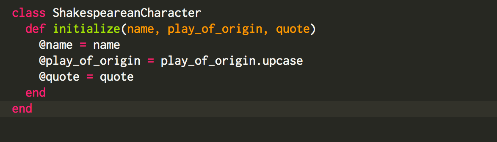
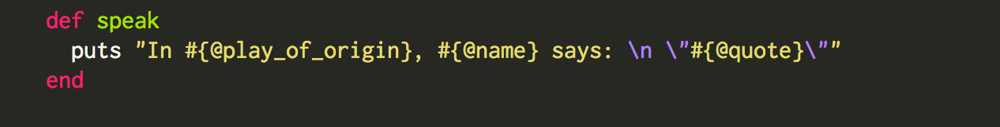
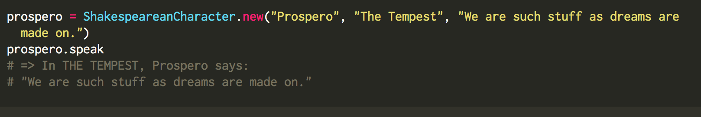
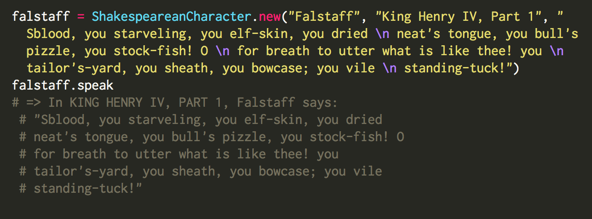

After seeing a fantastic production of "The Tempest" at SCR last night, naturally I thought -- gee, wouldn't Shakespeare characters be a great way to demonstrate how class instance variables and methods in Ruby work??? So that's exactly what I'm going to do.
Note: it also inspired me to create a Shakespearean Insult Generator, which you can check out here.
If I want to create a class that represents different Shakespeare characters, I might first do something like this:

I know I want all of my Shakespeare Character objects to have a name, a play of origin, and a quote, so whenever I create a new object, I want it to take these 3 pieces of information as arguments.
The @ symbol indicates an instance variable. Instance variables are variables that can be used/referenced anywhere within a class object. I'll show you what that looks like shortly. So in the initialize method above, I am taking the input arguments and turning them into instance variables.
Now let's make our objects speak! To do that, I have to create an instance method. An instance method is a method that can only be called on an object from the class in which it is defined. So to make our character object "speak", we could do something like this:

Note: the above method must be defined WITHIN the ShakespeareanCharacter class to work on ShakespeareanCharacter objects.
Notice I'm refering to the variables by their instance variable names(@quote, for example). If I tried to print just quote without the @ symbol, it would print nothing, because the speak method doesn't know it even exists. This is because quote is a local variable, meaning it exists only within the method in which it is created(initialize).
Now let's see this method in action! First I'm going to create a new object, prospero, and give it the desired arguments. Then, I'll call the speak method on my new object.

Let's try it with another object! 
Ta-dah! Now I can create as many character objects as I want, and have them print out their lines by calling the instance method speak.